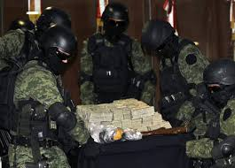
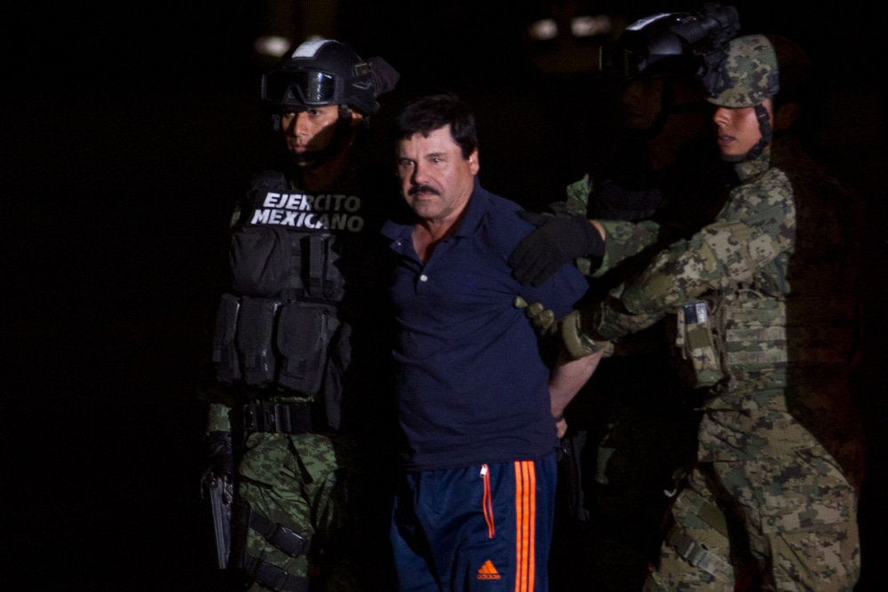
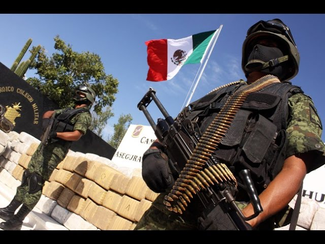
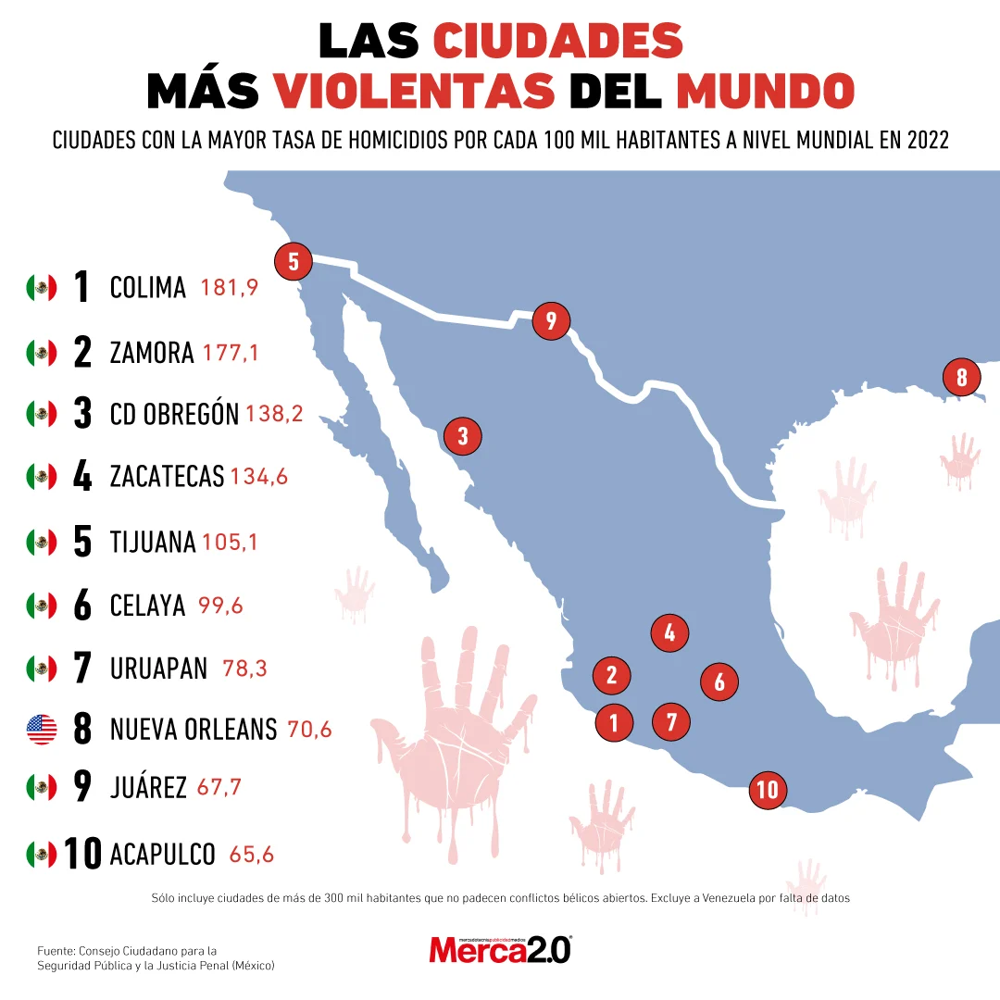

Narcotrafico e inseguridad en Mexico -
Drug trafficking and insecurity in Mexico
México enfrenta una crisis de seguridad vinculada al narcotráfico, con altos niveles de violencia, disputas entre cárteles y corrupción.
Principales Problemas:
1- Producción y tráfico de drogas: Grupos criminales como el Cártel de Sinaloa y el Cártel Jalisco Nueva Generación
controlan la producción y distribución de drogas como fentanilo, cocaína y metanfetaminas.
2- Violencia en regiones clave: Estados como Michoacán, Guerrero y Tamaulipas sufren homicidios, desapariciones
y enfrentamientos entre grupos criminales y fuerzas de seguridad.
3- Ataques en zonas turísticas: Destinos como Cancún, Tulum y la costa de Oaxaca han registrado incidentes violentos,
afectando la seguridad de residentes y turistas.
4- Corrupción y crimen organizado: La infiltración del narcotráfico en instituciones de seguridad y política dificulta
la lucha contra el crimen.
Acciones del Gobierno:
1. Operativos contra el narcotráfico: Captura de líderes criminales y decomiso de drogas y armas.
2. Refuerzo de seguridad: Mayor presencia militar y de la Guardia Nacional en zonas conflictivas.
3. Cooperación internacional: Coordinación con EE.UU. para frenar el tráfico de drogas y armas.
 
A pesar de los esfuerzos del gobierno, el narcotráfico sigue siendo un desafío clave para la seguridad
de México, con un impacto en la economía, la política y la vida cotidiana de sus ciudadanos.
